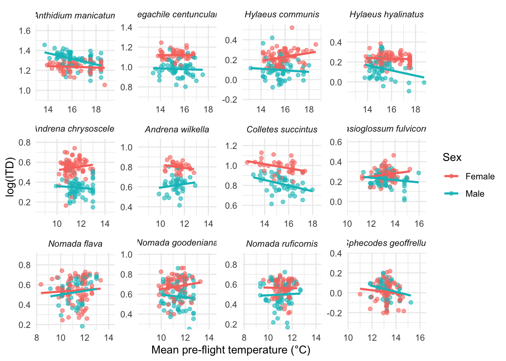
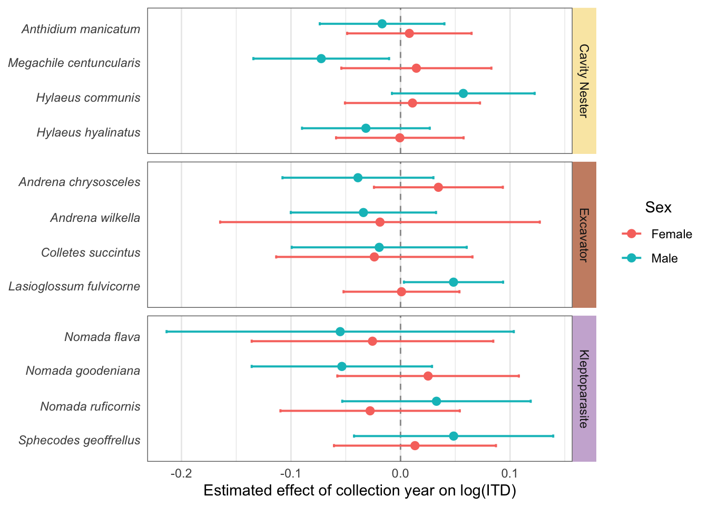

── Conflicts ────────────────────────────────────────── tidyverse_conflicts() ──
✖ dplyr::filter() masks stats::filter()
✖ dplyr::lag() masks stats::lag()
ℹ Use the conflicted package (<http://conflicted.r-lib.org/>) to force all conflicts to become errors
library(emmeans)
Welcome to emmeans.
Caution: You lose important information if you filter this package's results.
See '? untidy'
library(forcats)library(broom)
Load in data
# Load in databees_temps <-read.csv(here("Data/26_04_26_bees_temps_5km.csv"))
Set up
# Log transform measurements, make sex a factor, and capitalise (for plots)bees_temps <- bees_temps %>%mutate(ITD = intertegular_distance_mm,HW = HW_mm,FW = FW_length_mm,TIB = tibia_length_mm,log_ITD =log(ITD),log_HW =log(HW),log_FW =log(FW),log_TIB =log(TIB),# Sexsex =factor(sex),sex =fct_recode(sex,Female ="female",Male ="male" ),# Ecologyecology =factor(ecology),ecology =fct_recode(ecology,"Cavity Nester"="cavity nester","Excavator"="excavator","Kleptoparasite"="kleptoparasite" ) )# Rescale yearbees_temps$year_rescaled <- (bees_temps$year -1800) /100# Scaled to "centuries since 1800" to improve model stability# Set species order so they are organised by ecology and consistent across plotsspecies_order <-c("Anthidium manicatum","Megachile centuncularis","Hylaeus communis","Hylaeus hyalinatus","Andrena chrysosceles","Andrena wilkella","Colletes succintus","Lasioglossum fulvicorne","Nomada flava","Nomada goodeniana","Nomada ruficornis","Sphecodes geoffrellus")# Keep order and ensure factorbees_temps$full_name <-factor(bees_temps$full_name, levels = species_order)
Set up for visual elements in plots
# Helper for italic species labels on axisitalic_species <-function(x) {parse(text =paste0("italic('", x, "')"))}# Create italicised labels for facets (helper won't work here)species_labels <-c("Anthidium manicatum"="italic('Anthidium manicatum')","Megachile centuncularis"="italic('Megachile centuncularis')","Hylaeus communis"="italic('Hylaeus communis')","Hylaeus hyalinatus"="italic('Hylaeus hyalinatus')","Andrena chrysosceles"="italic('Andrena chrysosceles')","Andrena wilkella"="italic('Andrena wilkella')","Colletes succintus"="italic('Colletes succintus')","Lasioglossum fulvicorne"="italic('Lasioglossum fulvicorne')","Nomada flava"="italic('Nomada flava')","Nomada goodeniana"="italic('Nomada goodeniana')","Nomada ruficornis"="italic('Nomada ruficornis')","Sphecodes geoffrellus"="italic('Sphecodes geoffrellus')")
Data Exploration
Plots for overall dataset
# Plot the number of bee specimens measured from each yearggplot(bees_temps, aes(x = year)) +geom_bar() +labs(# title = "Coverage of Specimen Collection Year",x ="Year Collected",y ="Number of Specimens Measured" ) #+
# theme(plot.title = element_text(hjust = 0.5))# Plot the number of specimens of each sex for each speciesggplot(bees_temps, aes(x = full_name, fill = sex)) +geom_bar(position ="dodge") +scale_x_discrete(labels = italic_species) +labs(# title = "Number of Specimens by Sex per Species",x ="Species",y ="Number of Specimens Measured",fill ="Sex" ) +theme_minimal() +theme(plot.title =element_text(hjust =0.5),axis.text.x =element_text(angle =45, hjust =1) )
# Calculate the average number of specimens per speciesspecies_counts <- bees_temps %>%count(full_name)mean(species_counts$n)
[1] 124.5833
# Plot each species with temp against year # Strip colours in the same order as the facetsstrip_cols <- bees_temps |>distinct(full_name, ecology) |>arrange(full_name) |>mutate(strip_colour =case_when( ecology =="Cavity Nester"~"#fae8b2", ecology =="Excavator"~"#cb8e73", ecology =="Kleptoparasite"~"#ccb3d6" ) ) |>pull(strip_colour)# Dummy data used only to create the legendlegend_data <-data.frame(ecology =c("Cavity Nester", "Excavator", "Kleptoparasite"),x =min(bees_temps$year, na.rm =TRUE),y =min(bees_temps$mean_preflight_temp, na.rm =TRUE))# Centre each panel on the species mean temperaturesp_limits <- bees_temps %>%group_by(full_name) %>%summarise(centre =mean(mean_preflight_temp, na.rm =TRUE),.groups ="drop" ) %>%arrange(full_name)# 6 degrees total span = 3 degrees either side of the centrey_scales <-lapply(sp_limits$centre, function(cen) {scale_y_continuous(limits =c(cen -3, cen +3))})ggplot(bees_temps, aes(x = year, y = mean_preflight_temp)) +geom_point(alpha =0.35, colour ="#797d80") +geom_smooth(method ="lm", se =FALSE, colour ="#585b5e", linewidth =0.7) +geom_point(data = legend_data,aes(x = x, y = y, fill = ecology),shape =22,size =5,colour =NA,inherit.aes =FALSE,na.rm =TRUE ) +guides(fill =guide_legend(override.aes =list(colour =NA) ) ) +facet_wrap2(~ full_name,scales ="free_y",strip =strip_themed(background_x =elem_list_rect(fill = strip_cols, color =rep("transparent", 12) ) ) ) +facetted_pos_scales(y = y_scales) +scale_fill_manual(values =c("Cavity Nester"="#fae8b2","Excavator"="#cb8e73","Kleptoparasite"="#ccb3d6" ),name ="Nesting Strategy" ) +labs(x ="Collection year",y ="Mean pre-flight temperature (ºC)" ) +theme_bw() +theme(panel.border =element_blank(),strip.background =element_blank(),strip.text =element_text(face ="italic"),legend.position ="right" )
`geom_smooth()` using formula = 'y ~ x'
# Correlation for year and temperature by speciesbees_temps %>%group_by(full_name) %>%summarise(n =sum(complete.cases(year, mean_preflight_temp)),cor_year_temp =cor(year, mean_preflight_temp, use ="complete.obs") )
# Correlation for latitude and temperature by speciesbees_temps %>%group_by(full_name) %>%summarise(n =sum(complete.cases (latitude, mean_preflight_temp)),cor_temp_lat =cor(latitude, mean_preflight_temp, use ="complete.obs") )
# Plot for Year and ITDmake_species_plot_year_centered(df = bees_temps,xvar ="year_rescaled",yvar ="log_ITD",x_span =1.5,y_span =0.8) +labs(# title = "Effect of Year on Body Size",x ="Year",y ="log(ITD)" ) +theme(legend.position ="right" )
# Mean temp and ITDmake_species_plot(df = bees_temps,xvar ="mean_preflight_temp",yvar ="log_ITD",x_span =6,y_span =0.7)+labs(# title = "Effect of temperature on body size",x ="Mean pre-flight temperature (°C)",y ="log(ITD)" )+theme(legend.position ="right" )
`geom_smooth()` using formula = 'y ~ x'

Summary statistics
###Calculate the mean and variation in size per species
# Separate MLRs for each species# Ensure variables are factorsbees_temps <- bees_temps %>%mutate(sex =factor(sex),ecology =factor(ecology),full_name =factor(full_name) )# Centre temperaturebees_temps <- bees_temps %>%mutate(temp_c = mean_preflight_temp -mean(mean_preflight_temp, na.rm =TRUE) )species_list <-levels(bees_temps$full_name)models_base <-list()models_interactions <-list()for (sp in species_list) { df_sp <- bees_temps %>%filter(full_name == sp)# Base model m1 <-lm(log_ITD ~ sex + temp_c + year_rescaled + latitude, data = df_sp)# Interaction model m2 <-lm(log_ITD ~ sex*temp_c + sex*year_rescaled + latitude, data = df_sp) models_base[[sp]] <- m1 models_interactions[[sp]] <- m2}
Compare models
# Compare models to see if interaction is needed using AICaic_results <-lapply(species_list, function(sp) {AIC(models_base[[sp]], models_interactions[[sp]])})names(aic_results) <- species_listaic_results
Calculate and plot the sex-specific effects of temperature and year
#Sex-specific effects of temperature and year on log(ITD) using emtrends from interaction models# Ecology lookupspecies_eco <- bees_temps %>%distinct(full_name, ecology) %>%arrange(ecology, full_name)species_list <- species_eco$full_name# Helper to extract sex-specific slopes for any predictorextract_trends <-function(model_list, var_name, specs_formula =~ sex) { df <-do.call(rbind, lapply(names(model_list), function(sp) { mod <- model_list[[sp]]emtrends( mod,specs = specs_formula,var = var_name,infer =c(TRUE, TRUE) ) %>%as.data.frame() %>%mutate(species = sp) })) df %>%left_join(species_eco, by =c("species"="full_name")) %>%mutate(species =factor(species, levels = species_list),ecology =factor(ecology), )}# Helper to plot the slopesplot_trends <-function(df, slope_col, xlab) {ggplot(df, aes(x = .data[[slope_col]], y = species, color = sex)) +geom_vline(xintercept =0, linetype =2, linewidth =0.5, colour ="grey60") +geom_errorbar(aes(xmin = lower.CL, xmax = upper.CL),orientation ="y",position =position_dodge(width =0.55),width =0.18,linewidth =0.7 ) +geom_point(position =position_dodge(width =0.55),size =2.4 ) +scale_y_discrete(limits = rev,labels =function(x) parse(text =paste0("italic('", x, "')")) ) +facet_grid2( ecology ~ .,scales ="free_y",space ="free_y",strip =strip_themed(background_y =elem_list_rect(fill =c("#fae8b2", "#cb8e73", "#ccb3d6"),colour =c(NA, NA, NA),linewidth =c(0, 0, 0) ) ) ) +labs(x = xlab, y =NULL, color =" Sex") +theme_minimal(base_size =11) +theme(panel.grid.major.y =element_blank(),strip.text.y =element_text(angle =270, face ="plain"),legend.position ="right",panel.border =element_rect(colour ="#6b6b6b", fill =NA, linewidth =0.5),strip.background =element_blank() )}
Plot for year
# Sex-specific slopes for yearyear_sex <-extract_trends(models_interactions, "year_rescaled")plot_trends(year_sex, "year_rescaled.trend", "Estimated effect of collection year on log(ITD)") #+

# labs(title = "Estimated Effect of Collection Year on Bee Body Size") +# theme(plot.title = element_text(hjust = 0.5))
Plot for temperature
# Sex-specific slopes for temperaturetemp_sex <-extract_trends(models_interactions, "temp_c")plot_trends(temp_sex, "temp_c.trend", "Estimated effect of pre-flight temperature on log(ITD)") #+
# labs(title = "Estimated Effect of Increased Pre-flight Temperature on Bee Body Size") +# theme(plot.title = element_text(hjust = 0.5))
Allometry
Separate sexes and custom x axis
# Fit the allometry models separately by species and sexextract_allometry_by_sex <-function(response_var) { models <- bees_temps %>%split(list(.$full_name, .$sex), drop =TRUE) %>%lapply(function(df_sp) {lm(as.formula(paste(response_var, "~ log_ITD * temp_c + log_ITD * year_rescaled + latitude") ),data = df_sp ) })bind_rows(lapply(names(models), function(name) { parts <-strsplit(name, "\\.")[[1]] sp <- parts[1] sx <- parts[2]tidy(models[[name]]) %>%filter(term %in%c("log_ITD:temp_c", "log_ITD:year_rescaled")) %>%mutate(species = sp,sex = sx ) })) %>%mutate(trait = response_var)}# Run the function for all traitscoef_allometry_sex <-bind_rows(extract_allometry_by_sex("log_HW"),extract_allometry_by_sex("log_FW"),extract_allometry_by_sex("log_TIB"))# Clean and labelcoef_allometry_sex <- coef_allometry_sex %>%left_join(species_eco, by =c("species"="full_name")) %>%mutate(ecology =factor(ecology),species =factor(species, levels =rev(species_order)),trait =factor(trait, levels =c("log_HW", "log_FW", "log_TIB")),predictor = term,sex =factor(sex, levels =c("Female", "Male")) )# Split into sex-specific data framescoef_female <- coef_allometry_sex %>%filter(sex =="Female")coef_male <- coef_allometry_sex %>%filter(sex =="Male")# Manually set x-axis limits# Both fitting but own ranges#year_xmin <- -1.25#year_xmax <- 2.42#temp_xmin <- -0.40#temp_xmax <- 0.8# Both same range but cut off some points#year_xmin <- -1#year_xmax <- 1#temp_xmin <- -1#temp_xmax <- 1# Both fit, same ranges but squished#year_xmin <- -1.25#year_xmax <- 2.42#temp_xmin <- -1.25#temp_xmax <- 2.42# After changing to CI# fit all#year_xmin <- -1.9#year_xmax <- 4#temp_xmin <- -0.52#temp_xmax <- 1.2# Fit all points but not CIsyear_xmin <--1.9year_xmax <-1.9temp_xmin <--0.52temp_xmax <-0.52# Create plotting functionmake_plot <-function(df, predictor_name, xlab_text, x_min, x_max) {ggplot( df %>%filter(predictor == predictor_name),aes(x = estimate, y = species, colour = ecology) ) +geom_vline(xintercept =0, linetype ="dashed", colour ="#94abb0") +geom_point(size =2) +geom_errorbar(aes(xmin = estimate -1.96* std.error,xmax = estimate +1.96* std.error ),orientation ="y",width =0.2,colour ="black" ) +coord_cartesian(xlim =c(x_min, x_max)) +facet_grid2( ecology ~ trait,scales ="free_y",space ="free_y",labeller =labeller(trait =c(log_HW ="log(HW)",log_FW ="log(FW)",log_TIB ="log(TIB)" ) ),strip =strip_themed(background_y =elem_list_rect(fill =c("#fae8b2", "#cb8e73", "#ccb3d6"),colour =c(NA, NA, NA),linewidth =c(0, 0, 0) ) ) ) +scale_y_discrete(labels =function(x) parse(text =paste0("italic('", x, "')")) ) +theme_minimal() +theme(panel.border =element_rect(colour ="#6b6b6b", fill =NA),strip.text.y =element_text(angle =270),legend.position ="none",plot.title =element_text(hjust =0.5) ) +labs(x = xlab_text,y ="Species" ) +scale_color_manual(values =c("#ffcb30", "#cb8e73", "#b28fbf"))}# Create plotsplot_year_female <-make_plot( coef_female,"log_ITD:year_rescaled","Change in allometric slope over time", year_xmin, year_xmax)plot_year_male <-make_plot( coef_male,"log_ITD:year_rescaled","Change in allometric slope over time", year_xmin, year_xmax)plot_temp_female <-make_plot( coef_female,"log_ITD:temp_c","Change in allometric slope with temperature", temp_xmin, temp_xmax)plot_temp_male <-make_plot( coef_male,"log_ITD:temp_c","Change in allometric slope with temperature", temp_xmin, temp_xmax)# View plotsplot_year_female